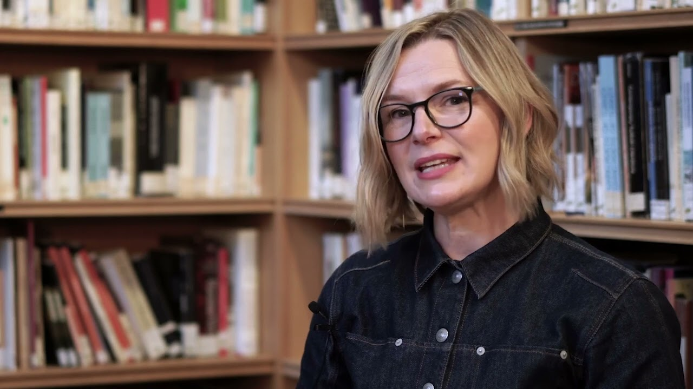
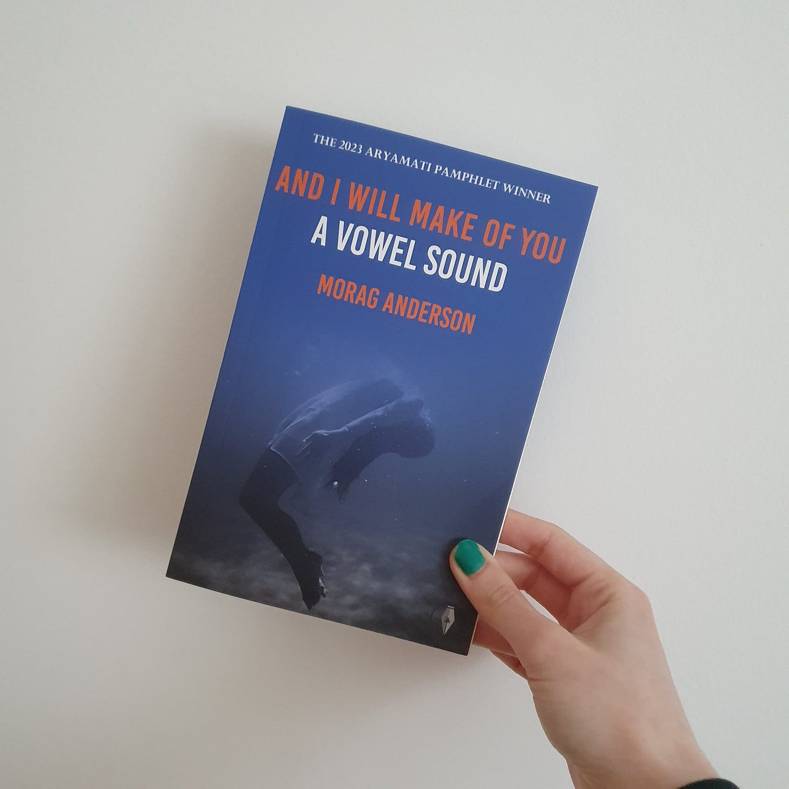
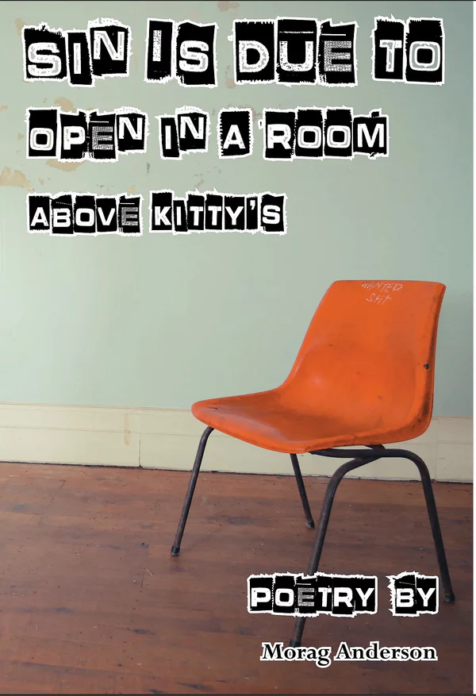

About
Morag Anderson is a Scottish poet based in Highland Perthshire. Her debut chapbook, Sin Is Due to Open in a Room Above Kitty’s, is published by Fly on the Wall Press, 2021. Her poetry appears in Finished Creatures, Gutter, Popshot Quarterly, Skylight 47, The Broken Spine Arts Collective, and The Scotsman as well as several anthologies. She was placed in the Oxford Brookes International Poetry Competition 2021, the Edwin Morgan Trust Competition 2021, the Blue Nib Chapbook VI Contest, shortlisted for the Bridport Poetry Prize 2019 and 2021, and won Over the Edge New Poet 2018 as well as the Clochoderick Prize 2018.
In 2019 she was invited to Galway as a featured reader at the Yehuda Amichai International Poetry Festival.
Morag collaborated with poets Audrey Molloy, Maeve McKenna, and Barbara DeCoursey Roy to produce the chapbook How Bright the Wings Drive Us which won the Dreich Alliance Competition 2021. The chapbook has been selected as part of the Emily Dickinson Museum’s Phosphorescence Series 2022.
She was featured poet of the month for Broken Spine Arts Collective in December 2021, and has twice performed at StAnza. Morag has been a featured reader with Cultivating Voices Live Poetry and Not The Time To Be Silent.
Morag is currently working on her first full collection.